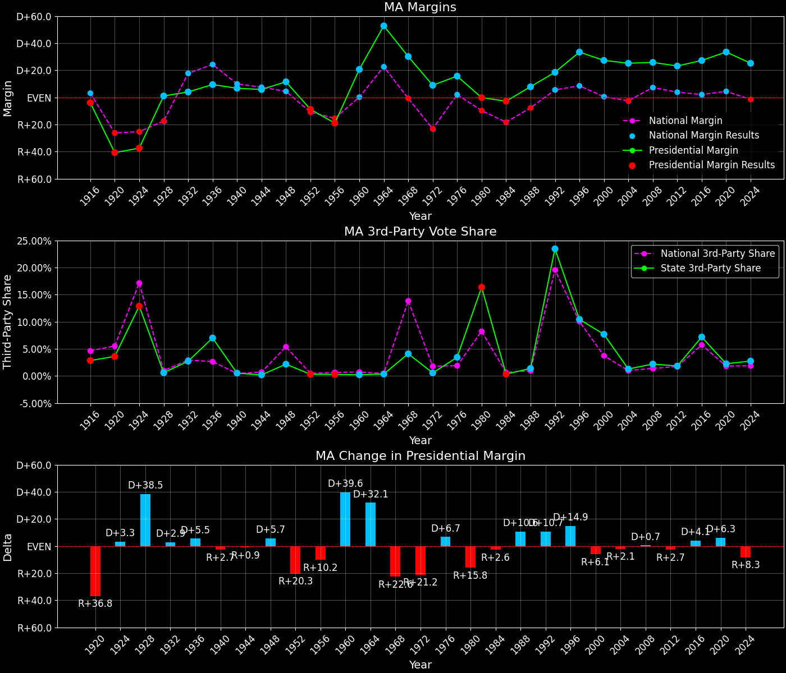

Massachusetts (MA) — Statewide

Margins · 3rd-Party share · Pres. deltas

Relative margins · Relative 3rd-Party · Rel. deltas
Massachusetts (MA) — Total Data
| Year | EVs | D | R | State Margin | Nat. Margin | Rel. Margin | Total votes |
|---|---|---|---|---|---|---|---|
| 1968 | 14 | 1,468,872(63.2%) | 766,445(33.0%) | D+30.2 | R+0.6 | D+30.8 | 2,323,296 |
| 1972 | 14 | 1,332,540(54.5%) | 1,112,018(45.5%) | D+9.0 (Δ R+21.2) | R+23.5 (Δ R+23.0) | D+32.6 (Δ D+1.7) | 2,444,558 |
| 1976 | 14 | 1,429,525(56.1%) | 1,030,276(40.4%) | D+15.7 (Δ D+6.7) | D+2.2 (Δ D+25.7) | D+13.5 (Δ R+19.1) | 2,547,572 |
| 1980 | 14 | 1,053,812(41.7%) | 1,057,631(41.9%) | R+0.2 (Δ R+15.8) | R+9.9 (Δ R+12.1) | D+9.7 (Δ R+3.7) | 2,524,308 |
| 1984 | 13 | 1,239,606(48.4%) | 1,310,936(51.2%) | R+2.8 (Δ R+2.6) | R+18.1 (Δ R+8.2) | D+15.3 (Δ D+5.6) | 2,559,453 |
| 1988 | 13 | 1,401,406(53.2%) | 1,195,644(45.4%) | D+7.8 (Δ D+10.6) | R+7.7 (Δ D+10.4) | D+15.6 (Δ D+0.2) | 2,633,801 |
| 1992 | 12 | 1,318,639(47.6%) | 805,039(29.0%) | D+18.5 (Δ D+10.7) | D+5.6 (Δ D+13.3) | D+12.9 (Δ R+2.6) | 2,771,589 |
| 1996 | 12 | 1,569,782(61.5%) | 717,116(28.1%) | D+33.4 (Δ D+14.9) | D+8.6 (Δ D+3.0) | D+24.8 (Δ D+11.9) | 2,553,514 |
| 2000 | 12 | 1,616,487(59.9%) | 878,502(32.5%) | D+27.3 (Δ R+6.0) | D+0.5 (Δ R+8.0) | D+26.8 (Δ D+2.0) | 2,698,952 |
| 2004 | 12 | 1,803,800(61.9%) | 1,071,109(36.8%) | D+25.2 (Δ R+2.2) | R+2.5 (Δ R+3.0) | D+27.6 (Δ D+0.8) | 2,912,388 |
| 2008 | 12 | 1,904,098(61.8%) | 1,108,854(36.0%) | D+25.8 (Δ D+0.7) | D+7.3 (Δ D+9.7) | D+18.6 (Δ R+9.1) | 3,081,014 |
| 2012 | 11 | 1,921,762(60.8%) | 1,188,460(37.6%) | D+23.2 (Δ R+2.6) | D+3.9 (Δ R+3.4) | D+19.3 (Δ D+0.8) | 3,161,216 |
| 2016 | 11 | 1,995,196(60.0%) | 1,090,893(32.8%) | D+27.2 (Δ D+4.0) | D+2.1 (Δ R+1.8) | D+25.1 (Δ D+5.8) | 3,325,046 |
| 2020 | 11 | 2,382,202(65.6%) | 1,167,202(32.1%) | D+33.5 (Δ D+6.3) | D+4.4 (Δ D+2.3) | D+29.0 (Δ D+3.9) | 3,631,402 |
| 2024 | 11 | 2,126,518(61.2%) | 1,251,303(36.0%) | D+25.2 (Δ R+8.3) | R+1.5 (Δ R+6.0) | D+26.7 (Δ R+2.3) | 3,473,668 |
Column explanations
- Δ
- Change (delta) in the value from the previous election year.
- Year
- Election year.
- EVs
- Number of electoral votes allocated to this state or unit.
- D
- Number of votes for the Democratic candidate (raw count(pct%)).
- R
- Number of votes for the Republican candidate (raw count(pct%)).
- State Margin
- Margin between the two major-party candidates, including third-party votes ((D - R)/total).
- Nat. Margin
- The national presidential margin for that year, including third-party votes ((D_total - R_total)/total_votes).
- Rel. Margin
- The presidential margin relative to the national presidential margin (Margin - Nat. Margin).
- Total votes
- Total voter turnout or ballots cast (when provided).
Massachusetts (MA) — Third-Party Data
| Year | Other votes | State 3rd-Party Share | 3rd-Party Nat. Share | 3rd-Party Rel. Share |
|---|---|---|---|---|
| 1968 | 87,979(3.8%) | 3.79% | 13.59% | -9.80% |
| 1972 | 0(0.0%) | 0.00% | 0.09% | -0.09% |
| 1976 | 87,771(3.4%) | 3.45% | 0.33% | 3.11% |
| 1980 | 412,865(16.4%) | 16.36% | 6.98% | 9.38% |
| 1984 | 8,911(0.3%) | 0.35% | 0.12% | 0.23% |
| 1988 | 36,751(1.4%) | 1.40% | 0.21% | 1.18% |
| 1992 | 647,911(23.4%) | 23.38% | 19.23% | 4.15% |
| 1996 | 266,616(10.4%) | 10.44% | 9.68% | 0.76% |
| 2000 | 203,963(7.6%) | 7.56% | 3.65% | 3.91% |
| 2004 | 37,479(1.3%) | 1.29% | 0.84% | 0.45% |
| 2008 | 68,062(2.2%) | 2.21% | 1.38% | 0.83% |
| 2012 | 50,994(1.6%) | 1.61% | 1.62% | -0.01% |
| 2016 | 238,957(7.2%) | 7.19% | 5.54% | 1.65% |
| 2020 | 81,998(2.3%) | 2.26% | 1.84% | 0.42% |
| 2024 | 95,847(2.8%) | 2.76% | 1.88% | 0.88% |
Column explanations
- Year
- Election year.
- Other votes
- Number of votes for third-party (other) candidates (raw count(pct%)).
- State 3rd-Party Share
- Share of the vote received by third-party (other) candidates.
- 3rd-Party Nat. Share
- The national third-party share for that year (3rd-Party votes / total votes).
- 3rd-Party Rel. Share
- Third-party share relative to the national third-party share (3rd-Party share - Nat. 3rd-Party share).

Two-party margins · relative · deltas
Massachusetts (MA) — Two-Party Data
| Year | 2-Party Margin | 2-Party Nat. Margin | 2-Party Rel. Margin |
|---|---|---|---|
| 1968 | D+31.4 | R+0.7 | D+32.1 |
| 1972 | D+9.0 (Δ R+22.4) | R+23.6 (Δ R+22.9) | D+32.6 (Δ D+0.5) |
| 1976 | D+16.2 (Δ D+7.2) | D+2.2 (Δ D+25.8) | D+14.0 (Δ R+18.6) |
| 1980 | R+0.2 (Δ R+16.4) | R+10.6 (Δ R+12.8) | D+10.5 (Δ R+3.6) |
| 1984 | R+2.8 (Δ R+2.6) | R+18.1 (Δ R+7.5) | D+15.3 (Δ D+4.9) |
| 1988 | D+7.9 (Δ D+10.7) | R+7.8 (Δ D+10.4) | D+15.7 (Δ D+0.3) |
| 1992 | D+24.2 (Δ D+16.3) | D+6.9 (Δ D+14.7) | D+17.3 (Δ D+1.6) |
| 1996 | D+37.3 (Δ D+13.1) | D+9.5 (Δ D+2.6) | D+27.8 (Δ D+10.5) |
| 2000 | D+29.6 (Δ R+7.7) | D+0.5 (Δ R+8.9) | D+29.0 (Δ D+1.2) |
| 2004 | D+25.5 (Δ R+4.1) | R+2.5 (Δ R+3.0) | D+28.0 (Δ R+1.1) |
| 2008 | D+26.4 (Δ D+0.9) | D+7.4 (Δ D+9.8) | D+19.0 (Δ R+8.9) |
| 2012 | D+23.6 (Δ R+2.8) | D+3.9 (Δ R+3.4) | D+19.6 (Δ D+0.6) |
| 2016 | D+29.3 (Δ D+5.7) | D+2.2 (Δ R+1.7) | D+27.1 (Δ D+7.4) |
| 2020 | D+34.2 (Δ D+4.9) | D+4.5 (Δ D+2.3) | D+29.7 (Δ D+2.6) |
| 2024 | D+25.9 (Δ R+8.3) | R+1.6 (Δ R+6.1) | D+27.5 (Δ R+2.2) |
Column explanations
- Δ
- Change (delta) in the value from the previous election year.
- Year
- Election year.
- 2-Party Margin
- Margin between the two major-party candidates, ignoring third-party votes ((D - R)/(D + R)).
- 2-Party Nat. Margin
- The national presidential margin for that year, including third-party votes ((D_total - R_total)/total_votes).
- 2-Party Rel. Margin
- The presidential margin relative to the national presidential margin (Margin - Nat. Margin).